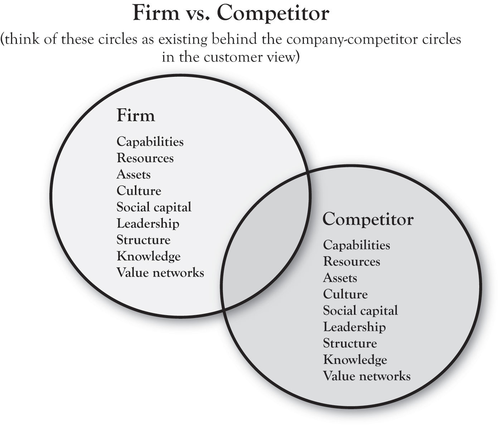
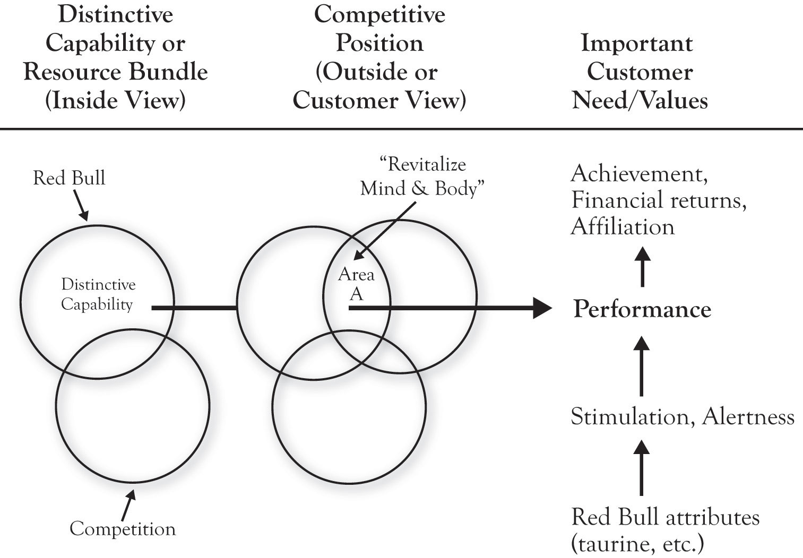

In 3-Circle analysis, significant insight is gained by thinking of the circles as having deeper layers. For example, Pastor Buss found that at the core of parents’ decisions about schools was a deep concern about their child’s development as an honest human being and achievement in later life. Similarly, the company circle has depth to it. That is, residing behind or inside the company circle that customers see are the capabilities, resources, assets, and value networks that the firm uses to create value for its customers.This dimension of the model is informed specifically by the works of Day (1994, October), Barney (1991), and Kumar (2004).
Figure 2.8 "The Inside View" provides a simple schematic of the dimensions on which the inside view might be discussed. The circle on the left results from an analysis of our company’s resources, capabilities, and assets (which we will refer to as RCAResources, capabilities, and assets.). The circle would “contain” a weighted listing of our RCAs, to be compared to those of the competitor, captured by the circle on the right. Note that the two circles overlap, which suggest that the firms have some capabilities in common. Yet each firm has unique RCAs as well.
This brings us to the ultimate definition of distinctive competitive advantage (following the work of Michael Porter and George Day). True competitive advantage exists when the attributes or benefits that reside in Area A in the outside view of the model (seen by customers) are the product of the firm’s unique RCAs. In other words, the strongest, most sustainable competitive advantage is one in which the firm’s unique position in the mind of customers (Area A) is produced by capabilities and resources that competitors cannot match.
Figure 2.8 The Inside View
At the heart of the framework is the idea that true competitive advantage comes from aligning the firm’s distinctive RCA to important customer values in ways that competitors do not. To illustrate, consider Red Bull, the brand that pioneered the “functional energy drink” beverage category. Figure 2.9 "Red Bull’s Alignment of the Inside and Outside Views" illustrates, in simple terms, the idea of alignment. The company built a variety of distinctive capabilities around research and development, product development, and (later) branding and marketing communications. Based on these capabilities, the company developed unique strategies for product (a research-based formula including the newly introduced ingredient taurine), distribution (refrigeration units and display innovation in retail stores, building relationships with clubs), and promotion (sponsorship or creation of high-energy events and athletes). These tactics were driven by the Area A positioning strategy “revitalizing body and mind,” ultimately delivering uniquely on the basic needs of combating mental and physical fatigue in people seeking performance, achievement, or socialization. IBISWorld reports that, as of 2010, Red Bull has a 70% share of the “energy drink” segment of the functional drink category.IBISWorld (2010).
The Red Bull case illustrates an important point regarding a common misconception about what most people believe to be vacuous marketing practices as a key to marketplace success. Without the foundation of key capabilities and resources in execution, communications campaigns that seek to create image are doomed to fail. The most successful brands and products are those that deliver on the promises made in positioning via strong core capabilities. In describing the history, structure, philosophy, and success of the Mayo Clinic—one of the most successful and important enterprises in American business history—Len Berry and Kent Selman (2008) note, “Smart executives understand that advertising effectiveness over time depends on advertised goods or services delivering what the organization promises.” In sum, the brand is a result of performance of the product or service. For Glenview New Church School, capability development is critical. GNCS’s current Area A is essentially built around its small size, individualized attention, and morals-based education. As we will see, there are opportunities for developing growth strategy that are based upon building new capabilities.
Figure 2.9 Red Bull’s Alignment of the Inside and Outside Views
